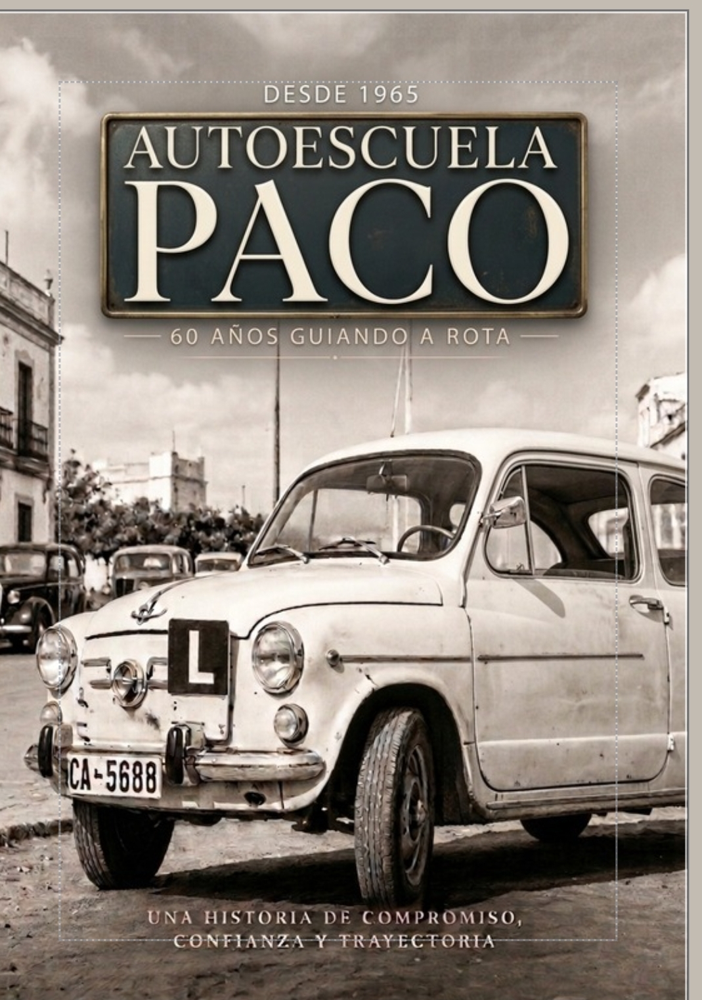

AM
Formación para obtener el permiso AM, con preparación teórica y práctica adaptada al proceso de aprendizaje.

Desde 1965, enseñando a conducir en Rota con experiencia, tecnología y un trato cercano.
Más de 60 años formando conductores · Permisos AM y B · Profesores titulados
Autoescuela Paco forma parte de la historia de la formación vial en Rota y continúa mirando hacia el futuro.

Autoescuela Paco nació en Rota en 1965. Desde entonces, generaciones de alumnos han pasado por nuestras aulas y vehículos para aprender a conducir.
La experiencia acumulada durante más de seis décadas convive hoy con nuevas herramientas, tecnología y una forma de trabajar pensada para las necesidades actuales de los alumnos.
Nuestro objetivo es ofrecer una formación clara, cercana y acompañada durante las distintas etapas del permiso.
La historia de Autoescuela Paco también merece ser contada.

Próximamente podrás acceder desde aquí a nuestra revista, con contenidos relacionados con la historia de la autoescuela, recuerdos, vehículos y momentos que forman parte de nuestra trayectoria.
VER REVISTA →Formación para quienes empiezan a moverse sobre dos ruedas y para quienes quieren obtener el permiso de conducir.
Formación para obtener el permiso AM, con preparación teórica y práctica adaptada al proceso de aprendizaje.
Preparación para el permiso B con formación teórica, plataforma de test y clases prácticas.
El proceso no termina en una clase. Te acompañamos en la preparación, los exámenes y las distintas fases de tu formación.
En Autoescuela Paco la teoría combina clases, práctica de test, tecnología y atención directa del profesor.
Organizamos la formación teórica con horarios pensados para facilitar que los alumnos puedan asistir y avanzar en su preparación.
Para conocer el horario actualizado de las clases, puedes contactar directamente con Autoescuela Paco.
No se trata solamente de hacer preguntas. Explicamos cómo afrontar los test, cómo interpretar las preguntas y cómo detectar los errores para convertirlos en aprendizaje.
Los alumnos disponen de una plataforma online para continuar practicando fuera del horario de clase.
El acceso permanente permite seguir haciendo test y reforzar contenidos según las necesidades de cada alumno.
En el aula hay un profesional cualificado para resolver las dudas que puedan surgir durante la preparación.
El objetivo es que el alumno no tenga que quedarse con una duda sin resolver.
Utilizamos una pantalla táctil como apoyo para explicar contenidos, situaciones de tráfico y conceptos mediante ejemplos visuales.
La tecnología se utiliza como herramienta al servicio de la formación, no como sustituto del profesor.
Una parte esencial de la formación es aprender a desenvolverse con seguridad y confianza al volante.
Las clases prácticas se desarrollan en un horario amplio, facilitando la organización de los alumnos.
Horario habitual de prácticas: de 7:30 a 14:30 y de 15:30 a 20:30.
La comunicación con el profesor continúa cuando es necesario resolver dudas relacionadas con el aprendizaje.
La finalidad es que el alumno pueda entender qué debe mejorar y cómo continuar progresando.
Las prácticas se plantean de forma progresiva, adaptándose al nivel del alumno y trabajando las diferentes situaciones necesarias para afrontar el examen y conducir con seguridad.
El acompañamiento también forma parte de nuestra manera de trabajar.
Autoescuela Paco se hace cargo del desplazamiento de los alumnos hasta la zona de examen.
Además, procuramos acompañar al alumno antes y después de sus exámenes teórico y práctico.
Siempre que sea posible, el alumno estará acompañado por un profesor cualificado, para ofrecer apoyo y resolver las dudas que puedan surgir.
Aquí incorporaremos una fotografía de nuestros vehículos de formación.
Cuatro profesores cualificados trabajando como equipo para acompañar al alumno durante su formación.
Más de 20 años de experiencia demostrable en el equipo y coordinación directa entre profesores.
El equipo de Autoescuela Paco está formado por cuatro profesores cualificados: Noelia, Rosa, Juan y Dani.
Dos desarrollan su actividad en el centro y dos trabajan habitualmente en los vehículos de formación.
El equipo cuenta con más de 20 años de experiencia demostrable en el ámbito de la formación vial.
La experiencia permite conocer diferentes ritmos de aprendizaje y adaptar la explicación a cada alumno.
Los profesores mantienen comunicación directa entre ellos para comentar situaciones, resolver dudas y ayudarse mutuamente.
Esta coordinación permite compartir criterios y buscar la mejor forma de explicar o trabajar cada situación con el alumno.
Queremos que el alumno sepa quién está detrás de su formación y pueda comunicarse con el equipo cuando necesite ayuda.
Hemos cuidado y renovado nuestras instalaciones para ofrecer un entorno cómodo y adecuado para la formación.
El centro ha sido renovado y cuidado para ofrecer un espacio agradable y cómodo durante la formación.
Disponemos de una zona de recepción y espera pensada para que el alumno pueda estar cómodo antes de sus clases.
Utilizamos tecnología de pantalla táctil como apoyo visual para explicar contenidos durante las clases.
Los alumnos pueden continuar su preparación online las 24 horas, los 7 días de la semana.
Cada parte del proceso tiene su función: aprender la teoría, practicar, resolver dudas y llegar preparado al examen.
Intentamos conocer las necesidades de cada alumno para orientar la formación y resolver las dificultades que puedan aparecer.
La comunicación entre los cuatro profesores facilita que las cuestiones relacionadas con el aprendizaje puedan compartirse y abordarse de forma coordinada.
Plataforma online, test y pantalla táctil forman parte de las herramientas que utilizamos para complementar la enseñanza presencial.
Consejos, información sobre permisos y contenidos relacionados con la formación vial en Rota.
Hemos creado un espacio donde explicamos diferentes aspectos relacionados con la obtención del permiso, la formación teórica, las clases prácticas y la conducción.
VISITAR EL BLOG →Puedes conocer novedades, alumnos que consiguen su permiso y otros contenidos de Autoescuela Paco.
Si quieres conocer Autoescuela Paco, resolver una duda o comenzar tu formación, puedes contactar con nosotros.
Estamos en Avenida San Fernando, 63, en Rota. Puedes consultar la ubicación exacta en Google Maps.
CÓMO LLEGAR →